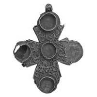
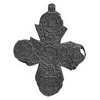

Catalog › CE-0474 · SYR2012-52
Encolpion bivalv de aliaj de cupru, cat. 52, NMIU Kiev
sec. XI (1001–1100) · loc necunoscut · Muzeul Național de Istorie a Ucrainei (НМИУ), Kiev, inv. МТ-677
double-sided reliquary cross (enkolpion), altul; c. XI (1001–1100); find spot unknown; kept at Muzeul Național de Istorie a Ucrainei (НМИУ), Kiev.




Identificare
- Categorie
- Encolpion bivalv (relicvar)
- Material
- Altul
- Tehnică
- Filigran / granulație
- Dimensiuni
- Î 67 × L 53 × Gr 6 mm
Iconografie
- Avers
- Ornament geometric
- Descriere avers
- Cruce-relicvar pectorală egală, cu capetele lărgite și rotunjite și cu proeminențe ascuțite pe laturi; unghiurile din încrucișare ascuțite; urechea rotundă. Ambele fețe și urechea sunt decorate cu ornament continuu din filigran. Pe față, în centru și pe capete, mari cuiburi rotunde din bandă (casete) pentru inserții.
- Revers
- Ornament geometric
- Descriere revers
- Pe revers, în locurile corespunzătoare cuiburilor de pe față, cercuri din sârmă filigranată; ornament continuu din filigran.
Datare și atribuire
- Datare
- sec. XI (1001–1100)
- Centru
- Balcani
- Tipologie
- cruce-relicvar pectorală cu filigran (8 exemplare cunoscute de acest tip, conform sursei)
Descoperire
- Context
- Colecție (fără context)
- Coordonate
- 50.4536° N, 30.5164° E
- Precizia locului
- Loc de păstrare (loc de descoperire incert)
Păstrare și referințe
- Colecție
- Muzeul Național de Istorie a Ucrainei (НМИУ), Kiev
- Nr. inventar
- МТ-677
- Bibliografie
- A. A. Пескова, Л. В. Строкова, Христианские древности Византии в «Сирийской коллекции» Б. И. и В. Н. Ханенко, Sankt-Petersburg–Kiev, 2012, 225 p. [Peskova, Strokova 2012], p. 144, cat. nr. 52, ilustrația (fotografie și desen) de la p. 144. Publicată și în: Zotsenko, Popelnytska, 2008 (http://prostir.museum/treasures/ua/); Popelnytska, Zotsenko, 2009, p. 200–204; Popelnytska, 2011, p. 180–185, fig. 3.
- Figura
- ilustrația la cat. nr. 52
- Planșe
- Peskova, Strokova 2012, p. 144
- Observații
- Cruce goală pe interior, alcătuită din două plăci plate unite printr-o bandă îngustă lipită; pe capetele laterale și cel de jos, pierderi de metal. Material și tehnică în sursă: aliaj de cupru; forjare, lipire, filigran. Crucea nu a intrat în „colecția siriană” Hanenko și era considerată pierdută, dar a fost fotografiată pe negativele lui V. V. Hvoika, motiv pentru care a fost inclusă în catalog; ulterior a fost găsită în grupa de fond „Metal”, unde ajunsese probabil prin depasportizare postbelică. Autoarele nu au nicio îndoială asupra originii balcano-dunărene; ea a intrat în colecția Hanenko în împrejurări necunoscute, dar menționează că asemenea cruci s-au găsit la Cherson și în Scandinavia, ceea ce permite presupunerea că ar fi putut fi găsită în Nipru Mijlociu. Dimensiuni în sursă (în paranteză, înălțimea cu urechile): 6,7×5,3 cm; grosime 0,6 cm. Atribuirea autoarelor: regiunea balcano-dunăreană, sec. XI. Locul descoperirii nu este dat în sursă (autoarele presupun doar o posibilă descoperire în Nipru Mijlociu). Material în sursă: aliaj de cupru. Nu face parte din „colecția siriană” Hanenko; în НМИУ, inv. МТ-677. Locul descoperirii nu e cunoscut cu precizie; punctul de pe hartă marchează locul de păstrare (Muzeul Național de Istorie a Ucrainei), nu locul descoperirii. Coordonate: nu sunt date în sursă.
Citare: Corpus Encolpiorum, CE-0474, Encolpion bivalv de aliaj de cupru, cat. 52, NMIU Kiev, --root/piese/SYR2012-52/ (accesat 2026-10-17).